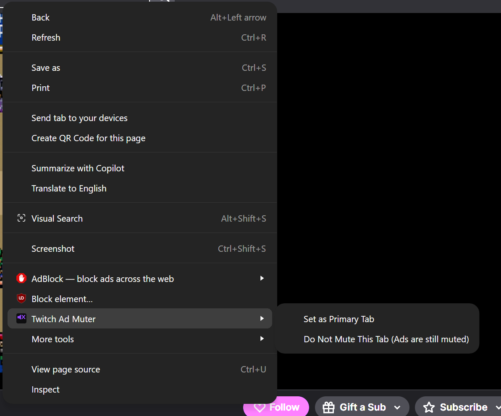
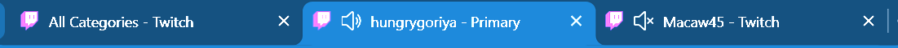
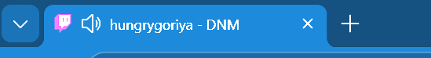

This extension was developed with significant assistance from Claude AI (Anthropic). The development process was undertaken deliberately as a learning exercise to explore the strengths and weaknesses of AI-assisted software development — including where AI guidance is reliable, where it requires correction, and how the iterative back-and-forth between developer and AI shapes the final product.
The developer retains responsibility for all design decisions and the extension's behaviour. Use at your own discretion.
Quiet Twitch automatically mutes your browser tab when a Twitch ad is playing and unmutes it the moment the ad ends. Multiple detection methods are used so the extension continues to work even when Twitch updates its player.
Additional features include:
Mutes every Twitch tab that is not currently in the foreground. Tabs unmute automatically when you switch to them. Useful when you have multiple streams open and only want to hear the one you are actively watching.
When an ad starts on the Primary Tab, the extension automatically switches focus to another Twitch stream tab in the same window that is not playing an ad. Requires at least two Twitch stream tabs to be open. Non-stream pages (directory, search, home, etc.) are excluded as targets. See Primary Tab below for how to designate one.
Works alongside Switch tab on ad. When the ad finishes on the Primary Tab, the extension switches focus back to it automatically. Interacting with the secondary tab while waiting does not affect this behaviour.
Closes the tab automatically when the broadcaster ends their stream. A 5-second grace period is applied before closing to avoid false positives from brief interruptions. If the stream resumes within that window the close is cancelled.
Detects stream crashes via Twitch's Error #2000 message and video stall detection (playback frozen for 15+ seconds). When a crash is detected the extension first attempts to click Twitch's own retry button; if none is found it reloads the tab. Limited to 3 reloads per tab within any 10-minute window to prevent infinite reload loops.
The Primary Tab is the Twitch stream tab you designate as your main viewing tab. It is used by Switch tab on ad and Return when ad ends to know which tab to switch away from when an ad plays and which to return to once the ad is over.
To set a tab as Primary, right-click anywhere on the Twitch page and choose Set as Primary Tab from the context menu. Only one tab can be Primary at a time — setting a new one automatically clears the previous.

Once set, the tab title updates to
<streamer> - Primary so you can identify it at a
glance in the tab bar. The suffix is maintained even if Twitch updates the title
dynamically (e.g. when the stream category or title changes). It is removed
automatically when a different tab is made Primary or when the tab is closed.

Do Not Mute (DNM) prevents the extension from muting a specific tab due to inactivity or any other content-related behaviour. Ads on that tab are still muted — this setting only protects content playback.
To enable it, right-click anywhere on the Twitch page and open the Quiet Twitch submenu — the same menu used to set the Primary Tab. Check Do Not Mute This Tab (Ads are still muted) to enable it for that tab. Unchecking it removes the protection.

- DNM suffix so you can identify
protected tabs at a glance. If the tab is also the Primary Tab,
- Primary takes precedence in the title.
Hide Streamer removes a streamer's cards from the pages you browse. Once hidden, the streamer no longer appears in home page recommendations, directory/category listings, the left sidebar's recommended channels, search results, or the “suggests these channels” section under another streamer. Hiding is purely visual — it does not block, unfollow, or report the streamer on Twitch's side.
To hide a streamer, navigate to their channel page and right-click anywhere on the page. Open the Quiet Twitch submenu and choose Hide Streamer: <username>. The option only appears when you are on a streamer's channel page, not on the home, directory, or search pages.
To unhide a streamer, open the extension popup (click the Quiet Twitch toolbar icon) and expand the Hidden Streamers row. Each hidden streamer appears as a chip with a × button — click it to remove them from the list. Their cards reappear immediately on any open Twitch tab.
Refresh the Twitch tab. If the problem persists, close the tab and reopen the stream. Twitch occasionally changes how its player works — if muting stops working entirely, check for an extension update.
Refresh the tab. If you manually muted the tab yourself, the extension will not unmute it — click the tab's mute icon in the browser to unmute it manually.
Ensure you have at least two Twitch stream tabs open in the same window and that a Primary Tab has been set via the right-click menu. The extension only switches between tabs in the same window.
Make sure Return when ad ends is enabled in the extension menu. If the Primary Tab was closed or refreshed during the ad, the switch back may not occur.
This can happen if Twitch briefly showed an offline screen during an ad. Disable Close tab when stream ends if this happens frequently. Reopening the stream should resume playback normally.
The menu only appears on Twitch stream pages — not on the homepage, directory, or other non-stream pages. Try reloading the extension from your browser's extension manager, or restart the browser.
Close all Twitch tabs and reopen them. If the issue continues, disable and re-enable the extension from your browser's extension manager, or restart the browser.
twitch.tv pages.